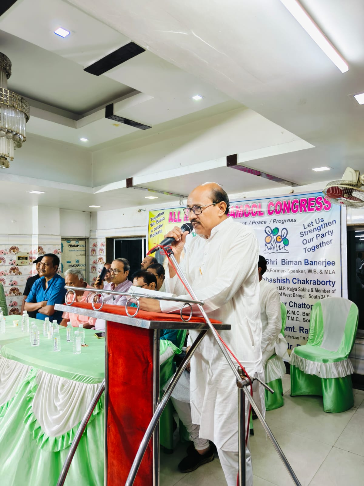
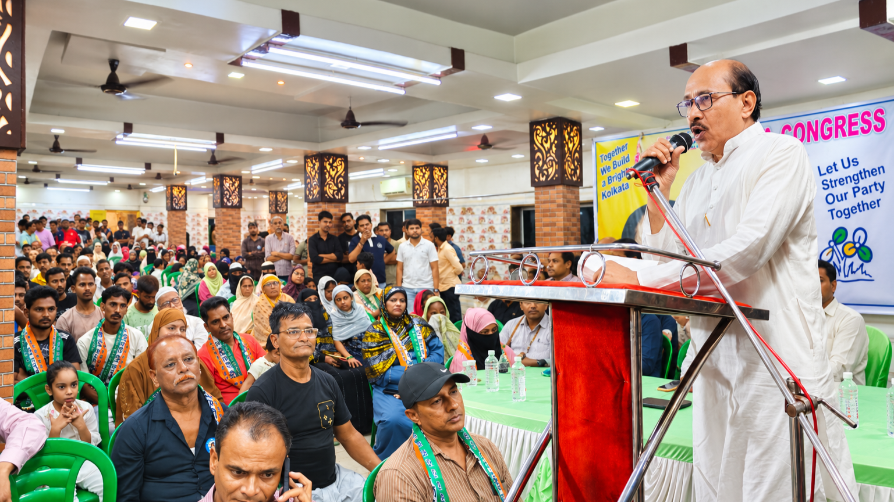
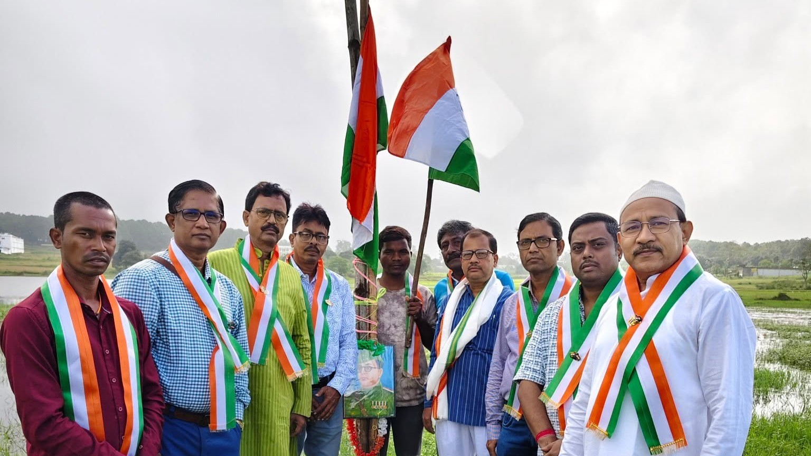
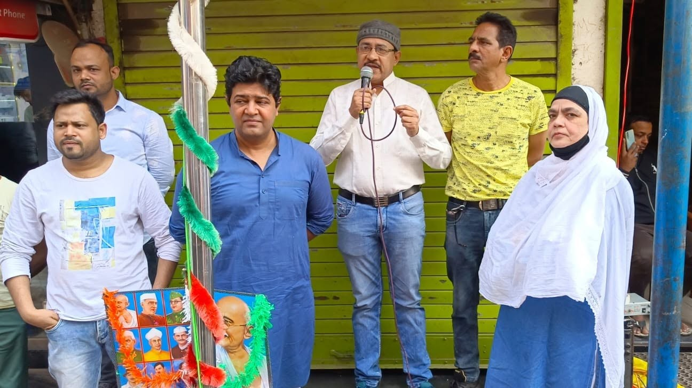
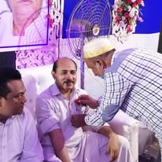
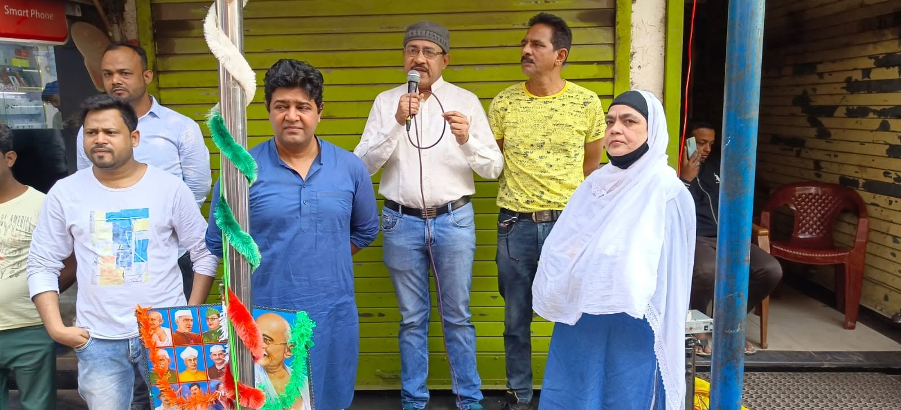

Education & awareness
Promoting the value of education and encouraging greater awareness among young people and families so that knowledge becomes a foundation for opportunity, dignity and responsible citizenship.
For Advocate Md. Kalam, public life is not limited to professional legal practice. It also means being present in the community — encouraging education, creating awareness, speaking on issues that affect ordinary people and participating in gatherings that strengthen social responsibility and collective well-being.

Public service is an extension of his belief that education, awareness and dialogue can help build a more informed, confident and compassionate society.
Through seminars, public speaking programmes, community gatherings and social initiatives, Advocate Md. Kalam seeks to connect professional knowledge with everyday concerns. His engagement focuses on encouraging people to understand their rights and responsibilities, value education and participate constructively in the well-being of their communities.
His approach is rooted in accessibility: important ideas should not remain confined to institutions or professional circles. They should reach students, families, neighbourhoods and citizens through conversation, awareness and direct community participation.
Promoting the value of education and encouraging greater awareness among young people and families so that knowledge becomes a foundation for opportunity, dignity and responsible citizenship.
Participating in seminars, meetings and public forums to exchange ideas, discuss social concerns and help make legal and civic awareness more approachable for ordinary citizens.
Engaging with people at the grassroots through gatherings and community initiatives, with emphasis on social harmony, collective responsibility and the overall well-being of society.
Public service requires both a voice and a presence. Whether addressing an organised gathering or joining people in a community programme, Advocate Md. Kalam's participation reflects a continuing connection with society outside the formal setting of courts and chambers.
These engagements provide opportunities to listen to people, understand local concerns, encourage constructive dialogue and strengthen awareness about education, civic values and social responsibility.



.jpg)


“The purpose of knowledge is not only professional achievement, but also the ability to contribute positively to the lives of others.”
His work in public service complements his identity as an advocate and educator: law brings an understanding of rights and justice, education builds awareness, and community engagement turns those values into meaningful social participation.